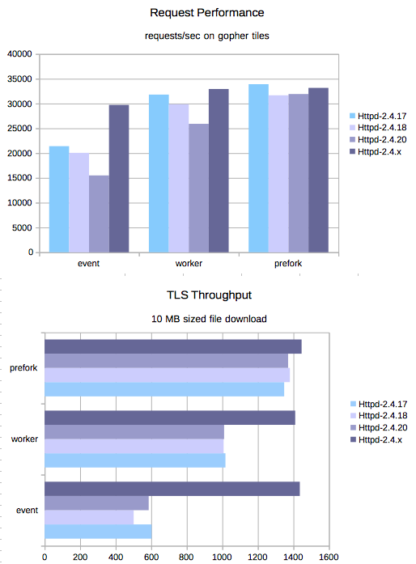

HTTP/2 for Apache httpd
Copyright (C) 2016 greenbytes GmbH
It's often not worth it to dwell on the past. However sometimes you need
to know where you have been in order to understand where you are. With the
introduction of the new bucket beams in v1.5.0
I wanted to know exactly that.
So, I build the last three Apache releases and ran two test suites
against them. And the result is what you see below int he picture. It shows
how requests per second and megabytes per second have developed in
mod_http2 (the 2.4.x is basically a 2.4.20 with mod_http2 1.5.0
inside).

The first test loads all resources from the famous http/2 gopher tile page (so quite small resources) using 100 connections and allowing 100 concurrent streams. The second test suite loads a 10 MB file 1000 times over 8 connections allow 10 concurrent streams.
And you see that performance with the event mpm module has
gotten a lot of love in the last weeks! Which is good, since it very
much deserves it!
(The other thing to see is that performance has degraded somewhat from release to release for small requests. That is a side effect when you focus on stability and features that performance optimizations need to wait. Bah!)
There are some more things I want to fine tune, maybe squeeze out some more requests and megabytes. And if you want to help me test this, you are very welcome to try the github releases here.
Münster, 22.04.2016,
Stefan Eissing, greenbytes GmbH
Copying and distribution of this file, with or without modification, are permitted in any medium without royalty provided the copyright notice and this notice are preserved. This file is offered as-is, without warranty of any kind. See LICENSE for details.